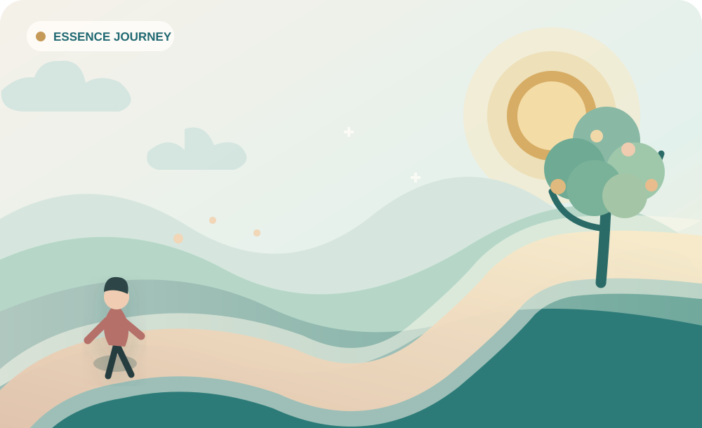
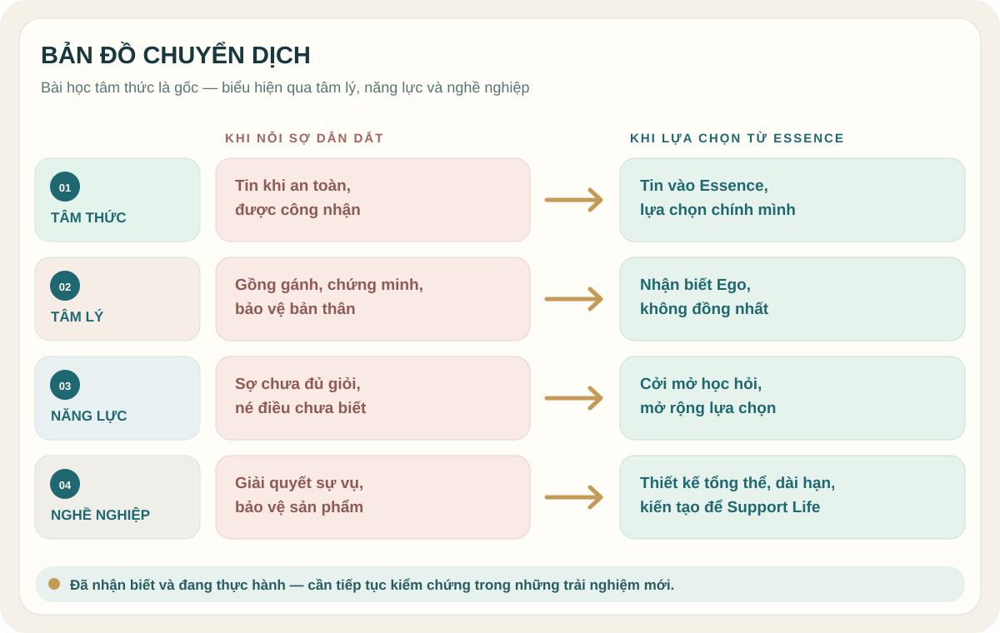
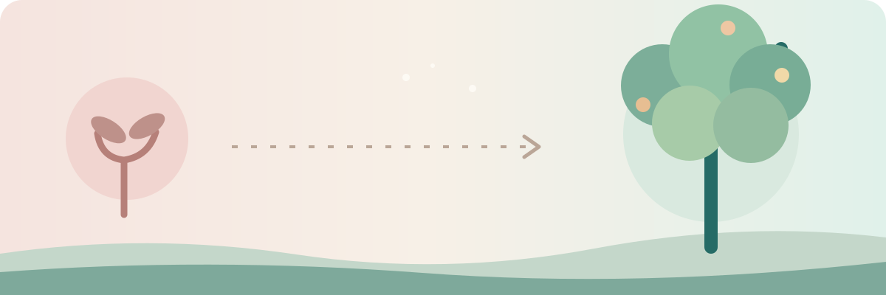
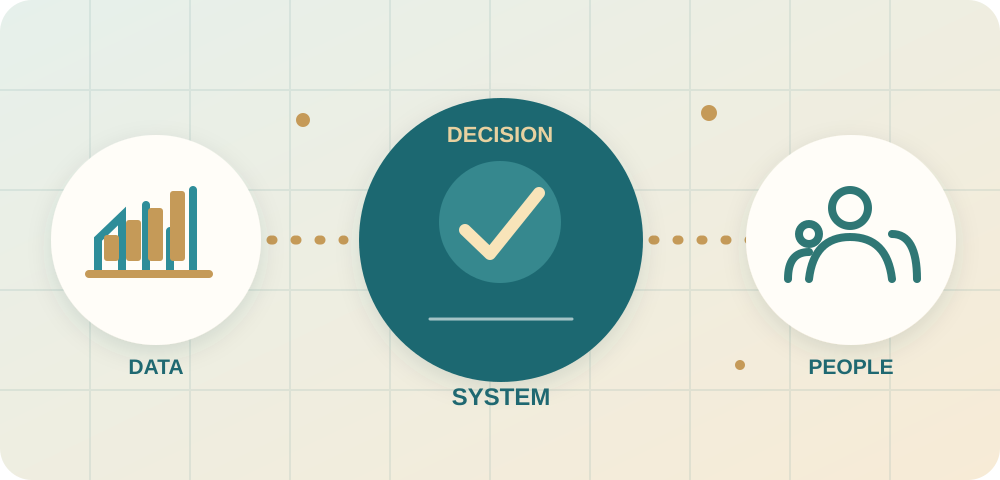

01 · Bất định
Lãnh đạo thay đổi
Sợ mất an toàn, bị thay thế, không được lựa chọn.
Niềm tin vào Essence. Từ tìm kiếm sự công nhận đến tự chủ, trưởng thành và kiến tạo từ ý nguyện.

Đọc từ tầng gốc xuống đời sống: Tâm thức → Tâm lý → Năng lực → Nghề nghiệp.

Mình đã có nguồn lực và ý nguyện trưởng thành, nhưng niềm tin còn phụ thuộc vào hoàn cảnh và sự công nhận.
Thay đổi trong công việc làm bộc lộ những giới hạn bên trong mình.
Sợ mất an toàn, bị thay thế, không được lựa chọn.
Muốn chứng minh, bảo vệ quá khứ, gồng gánh.
Nhận ra năng lực cần phát triển để làm System Developer.

Không chỉ thay đổi hoàn cảnh. Mình quay về quan sát và cập nhật cách mình lựa chọn.
Thấy nỗi sợ, Ego, sự phòng vệ.
Thấy cả tốt và chưa tốt, không dằn vặt.
Mình không phải sản phẩm hay đánh giá.
Niềm tin, Essence và ý nguyện.
Cam kết, tự chủ, học hỏi, kiến tạo.
Output nổi bật là sự rõ ràng về nội tâm và định hướng, chưa phải kết luận rằng mọi mô thức đã biến mất.
Sắp theo kiến trúc MLP: Tâm thức trước, rồi đến Tâm lý, Năng lực và Nghề nghiệp.
Niềm tin không đòi hỏi cuộc sống theo ý mình. Mình lựa chọn ở lại với chính mình, sống từ giá trị và ý nguyện.
Nỗi sợ, Ego, sản phẩm hay đánh giá không phải toàn bộ con người mình. Nhìn thấy để có lựa chọn mới.
Khi phân tích bị chất vấn, mình có thể ghi nhận đóng góp của sản phẩm cũ, nhìn thẳng giới hạn và điều chỉnh mà không xem đó là sự phủ nhận giá trị con người mình.
Không cần luôn đúng hay biết hết; mình cởi mở, học hỏi và bước vào vùng chưa biết.
Big-picture/System Thinking, Business & Operations Understanding, System Design, Project Management và Teamwork & Collaboration. Đây là mục tiêu phát triển, chưa phải năng lực đã làm chủ.
Không xây hệ thống để chứng minh; kiến tạo giải pháp để hỗ trợ con người và tổ chức.
Support Business: giúp doanh nghiệp hiểu vận hành và ra quyết định tốt hơn. Support People: giúp mọi người làm việc hiệu quả, chủ động với thông tin rõ ràng. Support Long-term Development: nhìn tổng thể, kết nối và thiết kế hệ thống có giá trị bền vững, không chỉ xử lý sự vụ.
Nhìn toàn cục và dài hạn, tạo hệ thống để con người hiểu vấn đề và đưa ra quyết định tốt hơn.

Giúp doanh nghiệp thấy rõ hoạt động và ra quyết định; giúp people làm việc hiệu quả, chủ động hơn.
Năng lực cần xây: Big-picture Thinking · Business Understanding · System Design · Project Management · Teamwork.
Biến những điều đã hiểu thành cách vận hành hằng ngày, quan sát và tiếp tục hạch toán.
Nhận biết Ego; không dằn vặt, không bỏ rơi chính mình.
Không gồng gánh, chứng minh; chịu trách nhiệm đúng phần.
Ưu tiên tư duy tổng quát, thiết kế, quản trị dự án, teamwork, hiểu business.
Xuất phát từ nhu cầu ra quyết định; đánh giá giá trị thực tế của hệ thống.
Giai đoạn này giúp mình hiểu rõ hơn nguồn động lực bên trong. Phần tiếp theo là sống và kiểm chứng những lựa chọn ấy trong công việc, mối quan hệ và mỗi ngày.
Xem hành trình niềm tin vào Essence ↗